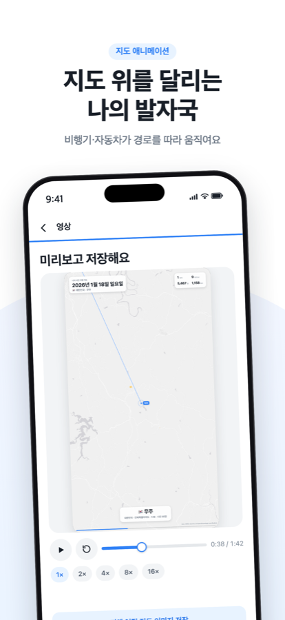
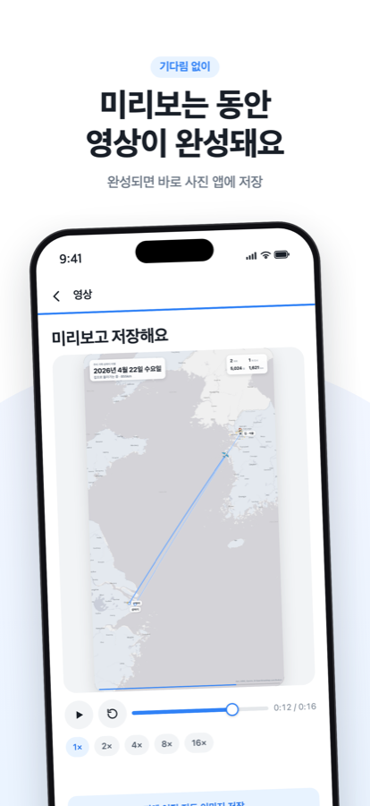

사진 속 위치와 촬영 시간만 읽어서, 다녀온 곳들을 지도 위에서 움직이는 영상으로 만들어요. 사진은 열지 않고, 어디로도 보내지 않아요.
App Store에서 받기개인정보처리방침iOS 17 이상 · 무료 (프리미엄 1회 구매)


위치·시간 메타데이터만 기기 안에서 읽어요. 사진도 위치 기록도 서버로 가지 않아요.
가까운 곳의 사진끼리 묶어 목적지를 찾고, 집 근처는 빼요. 여행별로 골라 만들 수 있어요.
세로·정사각·가로, 1080p. 길이를 정하면 배속은 자동. 화면과 상관없이 뒤에서 만들어져요.
어두운 테마·지구본·위성 지도·카메라 모드·해상도. 한 번 구매로 계속.